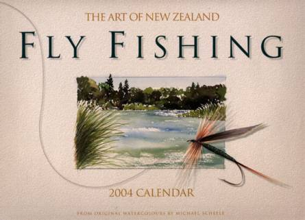

ティップス
ニュージーランド ティップス集 NZ釣行に向けてのフライタイイング

２００３年のクリスマス、ハミルトンに住む釣友のノボル君が、ニュージーランドのフライフィッシングについてのカレンダーを送ってくれた。アーティストの Michael Scheele 氏 が、北島・南島各地の有名な河川・湖沼の風景を描いた水彩画と、名だたるフライタイヤーの作品をイラストにしたものが載っていた。将来のＮＺ再訪に向けてフライタイイングを始めるにあたり、実家の本棚に大事にしまっておいたのを持って帰ってきた。
カレンダーは２００４年のものだったが、年が過ぎてもその美しさ、有用性は少しも変わることがないので、読者の皆さんにもお見せしたいと思い、Scheele さんに連絡を取ることにした。電子メールで、カレンダーをスキャンして画像をウェブサイトに載せても良いかと訊ねると、Scheele さんは快諾してくれた。
以下にまとめたものは、各月の水彩画とフライのイラストである。それぞれの河川・湖沼の位置は、巻末に付いていた地図をスキャンしておいたので参照していただきたい。また、各月に掲載されているフライは、それぞれのフライタイヤーの自信作・お気に入りであり、ニュージーランドの釣りシーズン毎のお勧めフライではないそうである。
ＮＺへの釣行を考えておられる方は、どうぞこれらのフライを参考にしてみて下さい。各フライの使用マテリアルまでは書いてなかったので、画像から判別できる限りの想像力を膨らませてタイイングに挑戦して下さい。
なお、各記事における記述は、2003年末時点のものであることをお断りしておきます。
アーティスト Michael Scheele 氏
| 月 | フライタイヤー | 河川・湖沼 |
|---|---|---|
| １月 | CLARK REID 氏 | THE WHIRINAKI 川 |
| ２月 | PETER CARTY 氏 | NELSON BACK COUNTRY |
| ３月 | GEOFF FRANKS 氏 | TONGARIRO 川 |
| ４月 | CLAYTON NICHOLL 氏 | WAIRAU 川 上流部 |
| ５月 | JOHN K. GILL 氏 | WAIMAKARIRI 川 南側支流 |
| ６月 | GARY KEMSLEY 氏 | TUTAEKURI 川 |
| ７月 | JOHN F. KENT 氏 | EMILY 湖 |
| ８月 | MARTIN HAYES 氏 | McGREGOR 湖 |
| ９月 | RANDALL KAUFMANN 氏 | HINEMAIAIA STREAM |
| １０月 | LEN PRENTICE 氏 | BRIGHTWATER 川 |
| １１月 | PATTI MAGNANO MADSON 氏 | ORETI 川上流部 |
| １２月 | RUDOLF HUSER 氏 | KIRKPATRICK 湖 |
これらの記事・画像の著作権は、Michael Scheele 氏 にあります。無断での転載・二次利用をお断りいたします。
ティップス 目次へ
サイトマップ
ホームへ
お問い合わせ